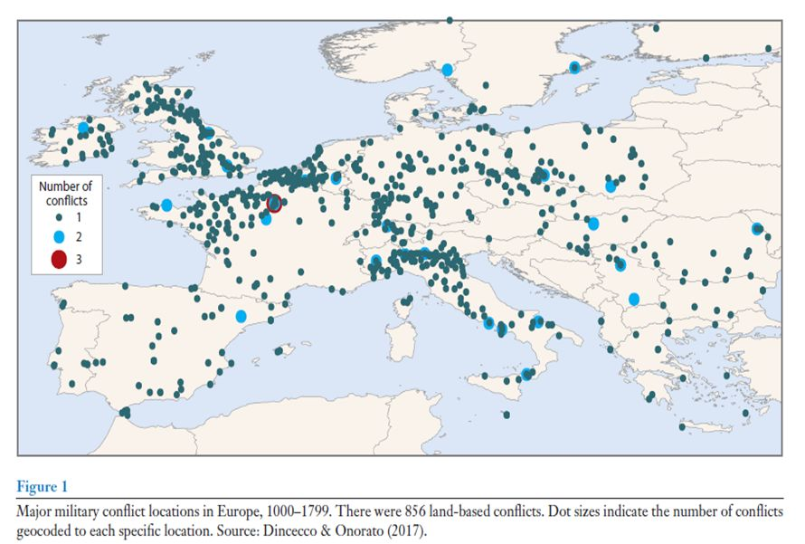
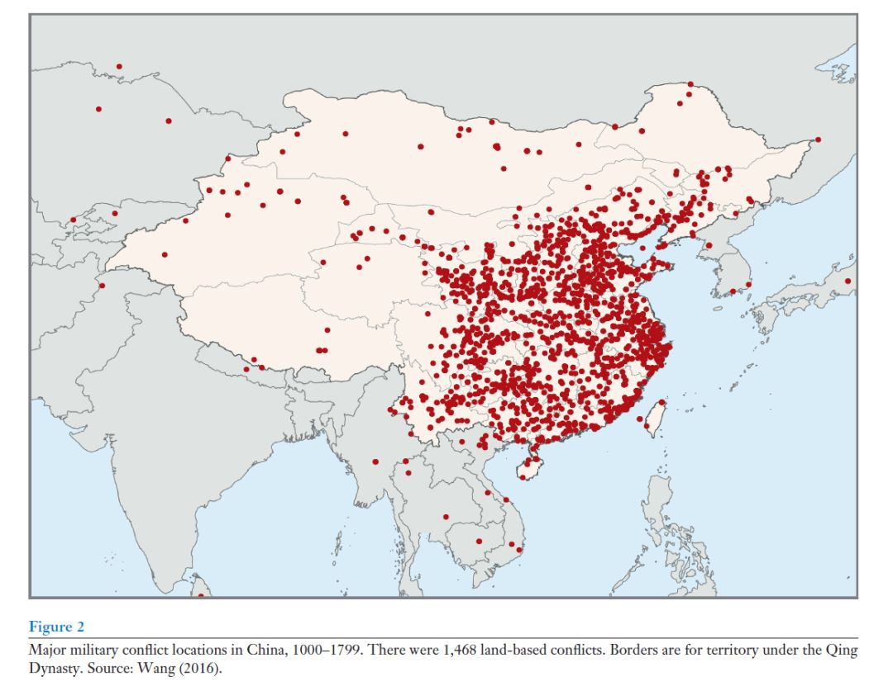
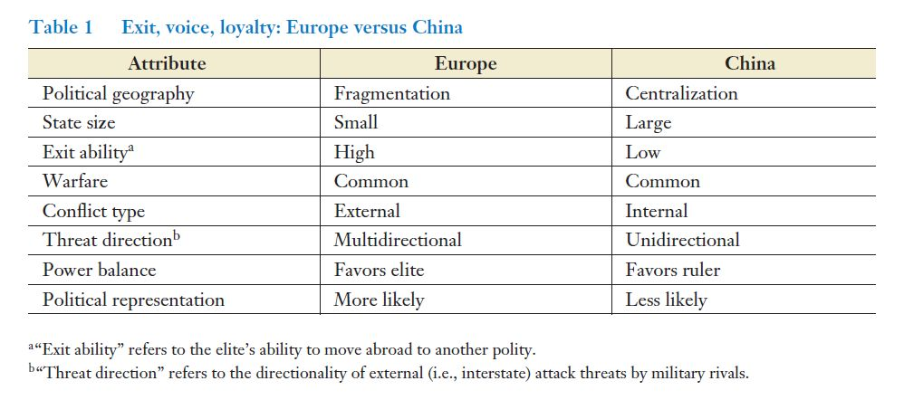
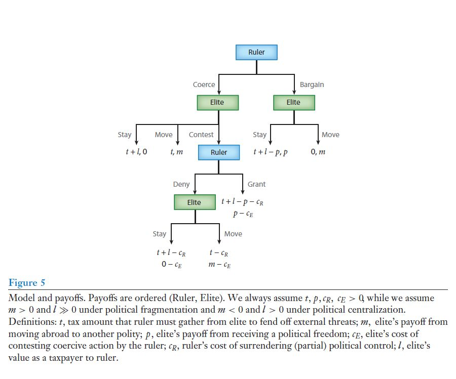
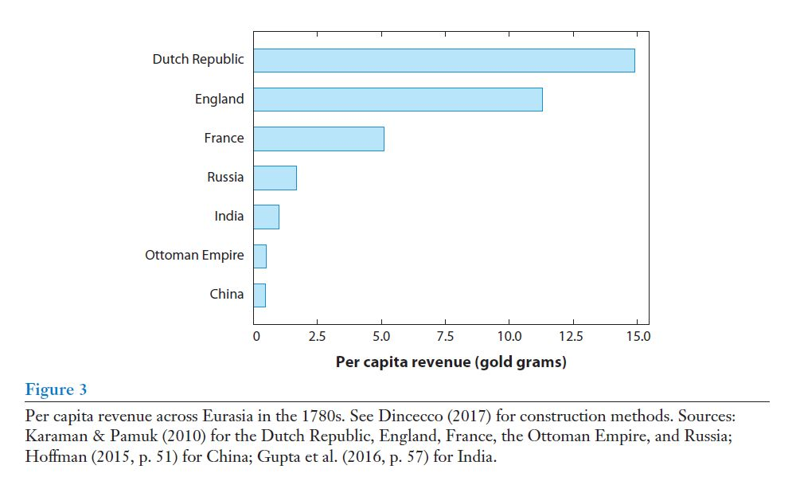
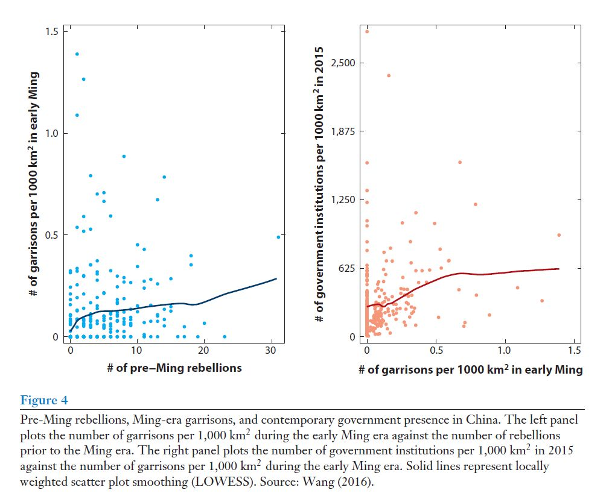

收录于合集
#历史政治学 58 个
#国家建构与国家发展 70 个
文献来源： Mark Dincecco and Yuhua Wang. 2018.“Violent Conflict and Political Development over the Long Run: China versus Europe.” Annual Review of Political Science 21: 341-358.
作者简介：
Mark Dincecco ，美国密歇根大学政治系助理教授，研究领域为政治经济史、政治经济发展与国际政治经济学，著有Political Transformations and Public Finances: Europe,1650-1913 (Cambridge University Press, 2011)、State Capacity and Economic Development: Present and Past (Cambridge University Press, 2017)
王裕华（Yuhua Wang） ，美国哈佛大学政府系助理教授，研究领域为比较政治、中国国家建设，著有Tying the Autocrat’s Hands: The Rise of the Rule of Law in China (Cambridge University Press, 2015)
Mark Dincecco（左）王裕华（右）
暴力与战争一直是研究欧洲在长期的政治发展过程中一个最为重要的解释。这一解释认为，由于战争成本太大，统治者允许授予精英部分自由来换取统治的租金。这样，主权者也得以巩固收入与加强军事力量。但是这种解释具有普遍性吗？由于之前对欧洲的传统研究并未对其详细论述，因此两位作者在这篇文章将比较历史上发生在欧洲与中国的暴力范式与长时段的政治发展。
为何将欧洲与中国相比？其理由有三，首先，中国与欧洲是当今世界舞台上的两大主要玩家。其次，他们在地理面积上大小相似，具有可比性。同时，在历史上，欧洲政治长期处于分裂的状态（比如一度有200个独立小国），而中国则长期是一个中央集权的统一国家，因此历史上政治地理的差异分别影响了欧洲和中国中暴力冲突与政治发展之间的关系。再者，尽管暴力冲突都是欧洲与中国历史的一个主要特征。但是，欧洲的大部分战争都是发生在相互敌对的国家之间，爆发也是多向度的，而中国的绝大多数战争则是与游牧民族作战以及内战。另外，由于欧洲的贵族们在战争中与国王讨价还价，通过缴税来换取政治自由比如代表制，最终形成了代议制传统。相反，古代中国的皇权在与传统士绅的“拉锯战”中变得日渐强大。为何如此？首先，由于向外迁移的困难，因此，中国贵族外逃不足以对君权构成威胁。其次，中国面临的外部威胁通常是单一方向的，同样减少了皇权所受的威胁。这样，中国的皇帝便无需向士绅们提供代表身份来换取他们向朝廷上缴税赋以强化军备武装。与此同时，中国国家还利用国内暴动所造成的威胁来巩固强制能力，由此也进一步强化了专制主义皇权。因此，欧洲和中国的历史说明了，战争不一定能促成长久的政治发展，其促成与否完全取决于当地的历史地理情境如何。
一、历史上的冲突形式
为了更好地理解中国与欧洲各自历史上发生的冲突形式，两位作者分别建立了欧洲和中国两地在跨度上为从公元1000到公元1799年的数据库，并且在每个数据库中对各自区域中在历史上爆发的主要战争都做了地理编码。其中，欧洲的数据库由Dincecco和Onorato根据两位历史学家Clodfelter和Bradbury的研究整理汇总而出，其记录了850多场主要的陆地冲突（如图1所示）。而中国的数据库则是由王裕华本人根据南京军事学院出版的《历史上的战争档案》上记载的详细数据整理而来，其中包含了大约1470个发生在陆地上的冲突（如图2所示）。当然，这两个数据库有两点不同，首先，欧洲数据库中的战争绝大多数为敌对国家之间的战争，基本上没有发生在国内的暴乱，而中国数据库中65%以上的战争都是内战。其次，欧洲的战争威胁来自于四面八方，而中国最主要的外部威胁来自于草原游牧部落。在1000-1799年之间，中国有80%的对外战争都是与草原游牧部落作战。因此，历史上欧洲和中国的战争形态有着显著区别。


二、政治地理的重要性
为了解释欧洲和中国历史上战争属性的不同，作者分别从政治地理上予以解释。自公元9世纪卡洛林王朝崩解，欧洲便长期处于分裂的状态。以至于到了1500年，欧洲至少出现了200个独立的国家，尽管这些国家很小，每个国家大约只领有25,000平方公里领地和300,000多人口。同时，这也意味着发生在小国之间的战争很常见，效果所遭受的外部进攻可以来自多方向。而对中国而言，自公元前221年秦始皇统一六国后，便废分封、设郡县，推行“车同轨，书同文”、统一货币、度量衡以及建立起中央财政体系。相反，一直到法国大革命前，即使在欧洲单个民族国家内部推行统一的努力也收效甚微。有关数据也支持了上述说法。在1000-1799年的800年间，欧洲平均有85个主权国家，而中国则只有1.5个。
因此，对欧洲而言，政治上的分裂可能与战争的属性存在相关关系，这对解释中国中央集权对暴力冲突形式的影响也有意义。与欧洲相比，首先，中国广袤的国土和漫长的边境线使得其受到的外部威胁是单一方向的。其次，在中央集权下，战争多表现为国内的暴力冲突。中央政府在监督各地长官时时常遇到挑战。数据库揭示到，有20%的战争是地方精英对皇帝的反叛，而另外30%则是民众起义。正如Acemoglu及其合作者提及的“政治议程效应”那般，中央集权的政体容易使得地方上的矛盾升级成全国矛盾。
三、经济增长？
接下来，作者建立起政治地理之于暴力冲突和政治发展之间的概念框架。因此，他们首先评析了经济发展带来代议制政府的经典观点。这一观点认为，从低地国家途径法国和德意志的部分地区一直延伸到意大利北部地区的这一片土地是欧洲的中心走廊。在这一条走廊中，富饶的土地便利了粮食生产并推动了城市群落的产生，而便利的水运则推动了贸易的兴起。城市繁荣的经济使得富裕阶层不再局限于传统农业经济利益转而寻求建立多元化的制度，最终推动了中世纪欧洲代议制政府的建立。但是作者指出，这一观点只有部分的解释力。因为在公元1000-1799年间，西欧的经济水平远低于中国，甚至比中东地区的国家还低。如果按照这个逻辑，经济最发达的中国应该最先产生代议制。相反的是，代议制只单纯地出现在西欧。不仅如此，在18世纪中叶，中国与欧洲的经济发展水平依然旗鼓相当，然而在政治制度上却已经大相径庭。由此可见，经济增长说不能很好地解释中国与欧洲的分野。
四、分析框架
那么究竟该如何解释政治地理之于暴力冲突和长程政治发展之间的关系呢？此前，一些历史学家提出了国家间竞争的解释。本文中的两位作者则提出一个简易的博弈模型（表1/图5所示）加以分析，而这个模型来源于Clark等人对Hirschman著名观点——“退出、呼吁与忠诚”的形式化。
 
这个模型分析了当统治者面临敌对国的军事进攻时可做出的政治决策。这些外部攻击可能是来自多方向或者是单方向的，统治者为了保证军事防卫的开支，需要从国内精英那里征税。但是统治者也需要思考征税时是采取强制措施还是跟精英讨价还价。相应的是，精英也可以采取三种可能的方式来予回应，分别是外迁、博弈或者停留。其中，外迁是指精英退出现居国度君主的统治，前往别的国家生活；博弈则意味着贵族向统治者上缴税收来换取政治自由，但是统治者可能拒绝也可能同意他们的要求。如果统治者同意，那么其将牺牲对精英的部分控制权力，相应地，精英可以争取到政治自由的积极权利；如果统治者拒绝了这一要求，那么贵族们需要决定到底是出走还是继续停留在国内。当精英决定继续停留在国内，那么统治者就获得了精英对其的忠诚。这样一来，这个博弈模型就能解释在何种情况下统治者为了维护国家主权而需要依赖精英。
这一博弈模型表明，代议制更容易在政治分裂的情境中产生。首先，精英会威胁统治者如果不答应授予他们政治自由，他们便会迁到国外。其次，当敌对国家从多方向发起军事攻击时，统治者更容易遭受重创，使得他高度重视贵族们的政治忠诚。这两种原因相结合使得精英有足够的底气与统治者讨价还价，进而争取到政治自由。相反，在中国中央集权制的情境中，由于中国皇帝控制了北起蒙古，南至南海的广袤国土，士绅外迁的可能性变得微乎其微。加之源自外部的攻击通常是从单一的方向发动，这两种原因相结合便大大降低了君权的脆弱程度，使得皇帝不是特别在乎这些士绅是否忠诚。由此，皇帝在与精英权力的“拉锯”中占据优势，导致在古代中国产生代议制的可能微乎其微。作者进一步用城市化率检验了两地的人口流动性加以佐证。作者指出，城市化率虽然粗略，但也是一个较为便利的测量历史上跨区域流动水平的方法。因此，尽管在13世纪欧洲与中国都有着相似的城市化水平，但是到了18世纪，欧洲的城市化率（13%）是中国（5%）的2倍还多，这足以印证欧洲人口的流动能力要强于中国。
五、汲取能力
另外，尽管模型中并未提及国家的汲取能力，但是契合本文观点的证据应该是代议制提升了国家的汲取能力。原因很简单，随着参政掌权的精英越来越多，征收越来越多的税赋也有利于他们自身。因此，议会可能更愿意批准税收要求，这反过来又将强化国家的汲取能力。正如图3所示，在18世纪晚期，德意志和英国的人均GDP达到15金克（gold grams）和11金克，而清朝连0.5金克都没达到，可见西欧的财政汲取能力已经远强于中国。

六、中国历史上冲突的政治遗产
最后，作者强调了模型所关注的中国历史上冲突的政治遗产，它与欧洲相当不同，这也意味着中国的暴力冲突促进了专制主义的强化而不是代议制的建立。其原因有三：首先，中央集权制意味着精英不能通过威胁来和皇帝进行讨价还价；其次，广袤无垠的土地意味着皇权所受外部的威胁更可能来自单纯一个方向，减少了君主的威胁，降低了贵族忠诚之于君主的重要性；因此，长期以降，国家强大的强制性权力、土地精英的弱势与高频的暴动一起构成了中国政治的动态平衡。太平天国便是一个例子，其反映了中国历史最基本的趋势。清廷因为镇压太平天国起义而导致财政枯竭，为此，君主需要寻求地方士绅的财力支持。作为交换，地方官学的名额增加，而士绅子弟则能借此入仕为官。王裕华特别指出，越邻近太平天国控制范围内的士绅，对朝廷的贡献越多。这与欧洲贵族在君主陷入困境时“趁人之危”以政治自由换政治忠诚不同，中国士绅用勤王来换取出将入相、入朝为官的机会。因此，士绅的捐赠不仅最终帮助朝廷镇压了太平天国起义，也强化了国家的强制性权力。
王裕华强调，国家会抓住面临潜在的起义威胁这一机会来强化其强制能力。为此，他分析了明代的卫所制。作为战时从事军事作战和平时从事农业生产的单位，明代共设立了500多个卫所。尽管其设立的初衷是为了守卫边疆，但是其最终也演变为镇压国内暴乱的工具，因此明代的卫所一般设置在容易发生叛乱的地区。由于驻军人数不足，明朝分别招募百姓和罪犯进行填补。后来，明朝皇帝命令驻军人员需要世代定居在那里。再者，为了连接首都与驻军处，明朝政府建立了驿站网络，这方便了中央政府向边境地区伸展控制权力。因此，即使在明朝覆灭后，大规模的移民和自给自足的驻军模式对中国的地方治理产生了深远影响。比如，在王裕华看来，拥有高密度驻军的府州县对今天县级政府的设置产生了深远影响。而图4便展示了明朝前期叛乱和明代前期卫所设置间存在正相关关系。

当然，中国历史上因为反叛而进行镇压的强制动力并没有在20世纪初随着帝制的终结而消弭。从1990年至今，中国国内大大增加部署保卫安全的组织与设备，“维稳”已成为地方官员执政的首要目标。
七、分析范式能否超越欧洲与中国？
作者反问，这一分析范式能不局限于欧洲和中国吗？为此，他们分别检视了撒哈拉以南非洲和拉美地区。一方面，作者强调，撒哈拉以南的非洲历史支持了本文的分析框架。Dincecco和Onorato关注到撒哈拉以南非洲政治地理上存在高密度的土地劳动力这一特征。在1500年，在这片广袤无垠的土地上，每平方公里的人口密度要远低于中国和欧洲。正如Bates指出这是富饶土地带来的政治利益那般。在这种情况下，精英外逃的能力相当高。因此，他们在与统治者讨价还价的过程中具有相当有优势，他们甚至可以利用自身的地位来影响公共政策。然而，高密度的土地劳动力却易于爆发持久的战争，与欧洲稀缺的土地资源相比，爆发在该地战争的主要原因在于抢夺劳动力，这导致了战争的属性与欧洲、中国明显不同。其中最常见的作战类型——掠夺战，其特点是针对竞争对手的资源、人口以及其他方面展开小规模的反复袭扰。加之随着时间的推移，当与跨大西洋黑奴贸易相结合时，这种战争类型容易导致开放式的冲突。为此，Bates指出，在过去由君主和战士的征服造成的领土争端一直延续到今天。而Besley 和 Reynal-Querol也通过实证研究指出，非洲前殖民时代的冲突与现代冲突存在统计学意义上的相关性。
另一方面，作者表示，战争对促进拉丁美洲的政治发展未有定论。比如，Centeno认为，在拉美独立后，由于政治上过于分裂，以至于精英在面临外国军事威胁时不能进行有效的政治改革。同时，历史上密集的土地劳动力形式阻碍了中央政府巩固政治权威、扩展政治权力。相反，Thies则认为，国家间的军事竞争形塑了20世纪拉美国家的发展模式。Arias强调，在西班牙于七年战争中败北后，墨西哥军事脆弱地区的财政汲取能力出现显著的增长。Soifer则指出，在拉美地区，中央与地方精英政治互动上的属性解释了拉美国家长期发展的差异。
由于本文提出的分析框架是否普遍还未有定论，因此两位作者表示将在后续研究中进一步检视世界范围内历史上冲突形成的政治遗产。
特别感谢王裕华教授拨冗审读！
**
**
**
**
编译：杨端程
编辑：吴温泉


“广告点一点，也是支持学术公益 ”
”
政文观止
微信扫一扫赞赏作者 __赞赏
已喜欢，对作者说句悄悄话
取消 __
发送给作者
发送
最多40字，当前共字
上一页 1/3 下一页
长按二维码向我转账
受苹果公司新规定影响，微信 iOS 版的赞赏功能被关闭，可通过二维码转账支持公众号。